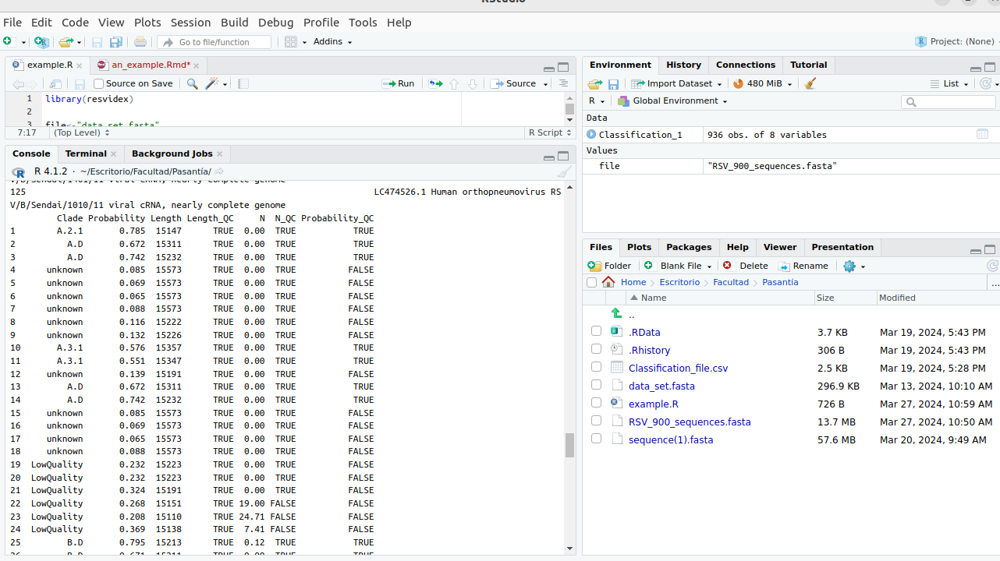
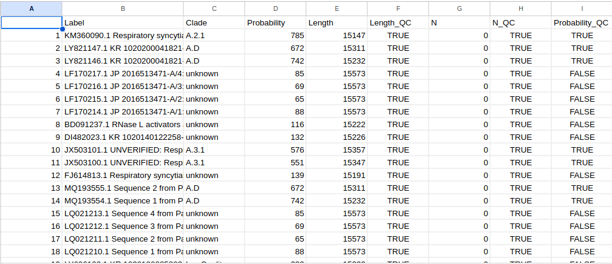

Let's get real: a full example with a real dataset
E4_an_example.RmdI downloaded a fasta file with multiple sequences of RSV virus from (https://www.ncbi.nlm.nih.gov/).
Let’s see how ReSVidex runs this dataset:
First I created a new R script and set the folder where the fasta is saved, as the working directory

Loaded the ReSVidex library
library(resvidex)Loaded the name of the fasta file, in this case “data_set.fasta”
file<-"RSV_900_sequences.fasta"Used the classification function from the ReSVidex package and saved it
Classification_Print<-classify(inputFile=file, model=FULL_GENOME)Visualized on the console the dataframe created by the function writing “Classification_1” on the script and running the line (i could instead write the line in the console itself)

Saved the results as a cvs file to open with an excel type program. This file is always saved in the same folder set as working directory
utils::write.csv2(Classification_1,"Classification_1.csv")
But as you can see, such a long list is hard to read, so… we could make some GRAPHICS!!
First let’s install and load the ggplot2 package, a very useful package made for making any type of graphics
install.package("ggplot2")
library (ggplot2)We could make a bar graphic that shows us how many sequences passed the probability check
plot1<-ggplot(data = Classification_1,
aes(x=Probability_QC))+
labs(x="Passed probability check",
y="Sequences")+
geom_bar()
plot1And that would look like this

Or we could see how many sequences are per clade
plot2<-ggplot(data = Classification_1,
aes(x=Clade))+
theme(axis.text.x = element_text(angle = 45, hjust = 1))+
geom_bar()
If you want to give some colors to the graphs you could rewrite the plot like this
col<-"#7AC5CD"
col2<-"#FF8C00"
plot1<-ggplot(data = Classification_1,
aes(x=Probability_QC, group=Probability_QC))+
labs(x="Passed probability check",
y="Sequences")+
theme(legend.position="none")+
scale_fill_manual(values = c(col2, col))+
geom_bar(aes(fill=Probability_QC))
plot2<-ggplot(data = Classification_1,
aes(x=Clade))+
theme(axis.text.x = element_text(angle = 45, hjust = 1))+
scale_colour_gradientn(colours = c(col,col2))+
theme(legend.position="none")+
geom_bar(aes(fill=Clade))And it would look like this


But there’s more… we could change some parameters…
The function classify has some predetermined parameters values that we can change
classify(inputFile=file,
model=FULL_GENOME,
QC_value=0.4,
Length_value=0.5,
N_value=2)For example we’ll use the same dataset, but with a lower probability QC_value. The line would look like this
Classification_2<-resvidex::classify(inputFile=file,
model=FULL_GENOME,
QC_value=0.2)Or we could put a lower value for length, like this
Classification_3<-resvidex::classify(inputFile=file,
model=FULL_GENOME,
Length_value = 0.1)Let’s make a comparison using the graphs from the original example…
Between the number of sequences that passed the quality test

And between the classification